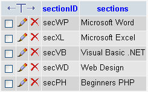
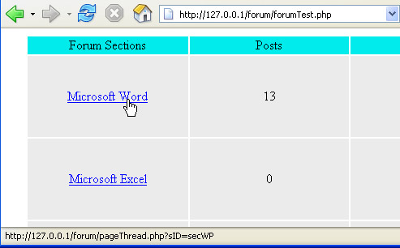
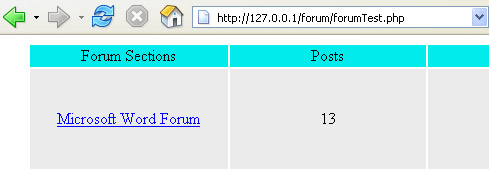

The Forum Tables
This lesson is part of an ongoing Foruml tutorial. The first part is here: Build your own Forum, along with all the files you need. The previous lesson is here.
The Forum Sections table is the simplest table in the database. It consists of only two fields. In phpMyAdmin, click on the forumsections table on the left hand side. Then click on Browse, at the top. You should see this:

The two columns (fields) are sectionID, and sections. If you look at the main page of the forum again, you'll see both the sectionID and the sections text in the status bar at the bottom of the page:

The sectionID is at the end of the link: sID = secWP. The sections text is the text for the hyperlink itself (the one with the hand over it). But your cursor over the other links and watch what happens in the status bar at the bottom of the page. When the link is clicked, though, we'll be taking the sID value over to the next page.
Exercise
In phpMyAdmin, click the Edit button (the pencil) next
to secWP. From the page that appears, change Microsoft Word into
anything you like. Click the "Go" button. Now, with the Forum
start page displayed in your browser, refresh your page. What happens?
You should see the text on the page change, as in the image below:

So the sections text in the forumsections table is used for the hyperlink on the main page of the forum. The sectionID is used to identify which section of the forum a visitor wants to go to. You'll see how that works soon. But have a look at the members table now.